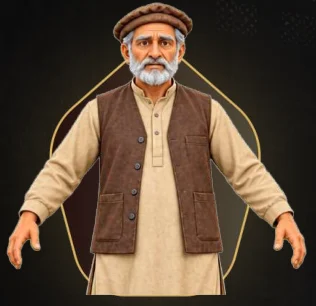
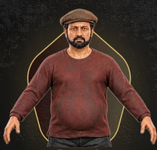
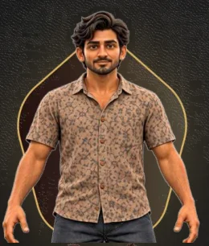
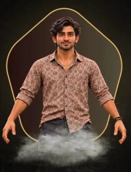
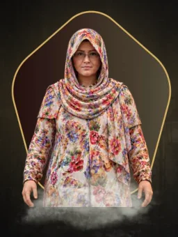
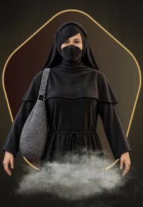
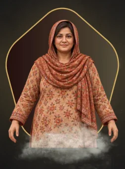
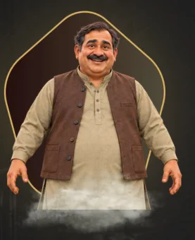

Baba Jameel
The Local Observer
- Friendly, practical and experienced
- Knows local streets and neighbourhoods
- Shares everyday stories about residents
- Best for the Market Route
GALIYAN PINDI DIYAN Galiyan Pindi Diyan is an interactive VR rickshaw journey game through Androon Rawalpindi, where players explore its architecture, culture and memories. One street, stop and story at a time. AN INTERACTIVE 3D & VR CULTURAL EXPERIENCE
The project transforms my original 3D animated film into an experience where people are not simply watching the city, they are exploring it. Users select a driver , choose a passenger and decide which route they want to experience. During the journey, they can observe historic architecture, stop at important locations and listen to stories connected to the area. The aim is to preserve the identity of old Rawalpindi while making its history approachable, personal and engaging for a younger generation. Project Overview
This project began as my University Thesis : a 3D animated journey through Androon Rawalpindi. The original animation followed a rickshaw moving through the old city on a winter night. It presented narrow streets, historic buildings, food stalls, warm lights, smoke, puddles, roadside shops and the everyday movement of the city. The film successfully communicated the atmosphere of Rawalpindi, but the viewer could only follow a fixed camera and predetermined story. The viewer watches what the filmmaker chooses to show, follows a fixed sequence and has little control over the experience. Young audiences are increasingly familiar with interactive media, games and virtual environments. A standard documentary may provide information, but it does not always create the feeling of discovery that makes a place memorable. Project Type: Interaction Design, 3D Environment and VR Experience Tools: Blender, Figma, Adobe After Effects, Adobe Illustrator, Adobe Photoshop and Unity . Platform: Desktop prototype and VR experience What if people could enter this world, sit inside the rickshaw and decide how they wanted to experience the city? Target Audience: Young adults, students, tourists and people connected to Rawalpindi THE BEGINNING This created a new question ! That question became the foundation of Galiyan Pindi Diyan. An Interactive 3D & VR Cultural Experience The Problem
How might I transform a linear 3D animation into an interactive cultural journey that allows people to explore Rawalpindi through choice, movement and conversation? The aim of Galiyan Pindi Diyan is to create an immersive cultural experience that allows users to discover Androon Rawalpindi from inside a moving rickshaw. The experience combines: 3D environmental storytelling VR exploration Character selection Route selection Interactive conversations Architectural information Local memories and stories Pakistani visual culture Ambient sound and spatial audio The rickshaw acts as both transportation and a storytelling space. It connects different streets, buildings, characters and memories within one continuous journey. DESIGN CHALLENGE PROJECT AIM
The research was guided by five main questions: 1.How familiar are people with the historic buildings and cultural locations of Androon Rawalpindi? 2.What prevents people from visiting or learning about these places? 3.Which parts of Rawalpindi architecture, food, markets, memories or stories interest people the most? 4.Would people prefer to explore Rawalpindi through a video, website, game or immersive VR journey? I used a mixed research process that included both primary and secondary research. Primary research helped me understand how people currently experience Rawalpindi and what they would expect from an interactive cultural project. The history of Rawalpindi Historic buildings and religious architecture Old neighbourhoods and markets Local food locations Rickshaw culture Pakistani textile and decorative art Environmental storytelling Interaction design in VR RESEARCH QUESTIONS RESEARCH PROCESS PRIMARY RESEARCH SECONDARY RESEARCH SURVEY I conducted a survey with 28 participants between the ages of 15 and 46. The survey included people with different levels of familiarity with Rawalpindi. Some participants had lived in the city for many years, while others had limited knowledge of its historic areas.
CONCEPT DEVELOPMENT The first version was a linear animation. It established the visual world, architecture, atmosphere and rickshaw journey. Its main strength was cinematic storytelling. However, it provided no user choice. The final VR version places the user inside the rickshaw. INITIAL CONCEPT: A 3D ANIMATED FILM FINAL CONCEPT: AN INTERACTIVE 3D AND VR JOURNEY GAME
THE MAIN EXPERIENCE 1.The user begins the journey by selecting a driver and passenger. 2.After the characters are selected, the user enters the rickshaw from the passenger’s perspective. The driver asks where they would like to go, and the user selects a route. 3.As the journey begins, the driver responds to nearby locations. The user can continue listening, stop the rickshaw, ask for more information or save a location in a digital memory journal AN INTERACTIVE 3D AND VR JOURNEY
MEET THE DRIVERS RASHID BABA JAMEEL SAAD ONE DRIVER ONE STORY The Local Observer The History Keeper The Local Observer Friendly, practical and experienced Knows local streets and neighbourhoods Shares everyday stories about residents Best for the Market Route Wise, calm and knowledgeable Knows old buildings and historical places Shares memories from Rawalpindi’s past Best for the Architecture Route Young, energetic and humorous Knows new food spots and city shortcuts Connects old Pindi with modern city life Best for the Food & Streets Route
MEET THE PASSENGERS HAMZA KHALA NASREEN AMNA SARA UNCLE TARIQ The Young Professional The Memory Keeper The Curious Student The Cultural Explorer The Jolly Traveller Passengers allow players to experience Rawalpindi through different personalities and perspectives. During the ride, they can select routes, look around, stop at important locations and ask the driver questions. Their choices determine which buildings, markets, food places and stories they discover.
ROUTE SYSTEM ROUTE 1 ARCHITECTURE OF PINDI ROUTE 2 LIVING MEMORIES ROUTE 2 ROUTE 3 FOOD AND STREET The user is not forced to choose the recommended guide. Any driver can travel on any route, but the style of information changes according to the selected character. This route focuses on: Historic façades Churches and religious buildings Havelis Wooden balconies Windows and decorative details Building materials Preservation and decay Best guide: Baba Jameel This route focuses on: Food stalls Tea shops Local restaurants Busy markets New gathering places Shortcuts and modern city movement Best guide: Saad This route explores: Family memories Childhood stories Neighbourhood traditions Markets and community life Sounds associated with particular streets Stories of how places have changed Best guide: Rashid
INTERACTION DESIGN LOOK STOP ASK CONTINUE COLLECT The interactions were kept simple so that users could focus on the environment. The user can look around the rickshaw and examine the street. The user can ask the driver to stop near an important location. A dialogue menu allows the user to request more information. The user can return to the ride whenever they are ready. The user can save a building, story or sound in the memory journal.
VISUAL DIRECTION COLOUR PALETTE TYPOGRAPHY TEXTURES
CHARACTER ART DIRECTION The characters are designed as handcrafted 3D models . Their faces are expressive but not overly cartoonish or photorealistic. Slight imperfections in the modelling help them feel connected to the handmade visual language of the environment. Clothing, body shapes, skin tones and accessories create variety while keeping the characters recognisably Pakistani . The character designs avoid presenting everyone through the same age, body type or social identity.
ENVIRONMENTAL DESIGN The environment is designed around observation rather than speed. Important elements include: Historic architecture as the visual focus A moving rickshaw as the main viewpoin t Warm bulbs against a dark night Winter fog and cooking smoke Reflections on wet streets Shop interiors and signs Layered environmental sound Architectural highlights triggered by proximity Street vendours The environment should feel lived in, not empty or staged. SMOKE FROM TEA SIGN BOARDS TEA CERAMIC TEA CUPS TRADITIONAL WINTER CLOTHING AGED METAL KETTLES --------------- EVERYDAY CHAI CULTURE OF ANDROON PINDI
RASHID The Storyteller Where would you like to go? Local Memories Hidden Stories Ask Rashid to pause the ride. S T O P S A V E S A V E K E E P R I D I N G C O N T I N U E A R C H I T E C T U R E O F P I N D I M A R K E T F O O D & S T R E E T S STOP NEAR THIS PLACE? SAVE TO MEMORY JOURNAL BABA JAMEEL ---------------- ? ! MAIN INTERFACE COMPONENTS Begin Journey button Driver cards Passenger cards Route cards Stop Here action Ask Driver dialogue Continue Ride action Save Memory button Sound and subtitle settings Comfort settings Memory journal BEGIN JOURNEY INTERFACE DESIGN BEGIN JOURNEY BEGIN JOURNEY The interface uses minimal controls and large readable elements .
D E V E L O P M E N T P R O C E S S The existing 3D animation was used as the visual foundation for the VR game. Its environments, buildings, rickshaw, characters, lighting and cultural details were adapted into an interactive experience.
S C E N E P R E P A R A T I O N A S S E T O P T I M I Z A T I O N G A M E E N G I N E G A M E I N T E R A C T I O N S S O U N D D E S I G N S T O R Y S Y S T E M T E S T I N G V R P E R S P E C T I V E S T E P 1 S T E P 2 S T E P 3 S T E P 5 S T E P 7 S T E P 6 S T E P 8 S T E P 4 The original Blender environment was cleaned and divided into explorable locations. Buildings, characters and the rickshaw were optimized for smooth VR performance. The 3D assets were transferred to Unity Rickshaw sounds, street noise, conversations and cultural music created an immersive atmosphere. Driver dialogues and local stories were connected to important locations. Route selection, stopping, looking around, asking questions and collecting memories were added. Navigation, readability, comfort and performance were tested to improve the experience. A 360° passenger viewpoint was placed inside the rickshaw.
BACK GALIYAN PINDI DIYAN A N I N T E R A C T I V E V R E X P L O R A T I O N G A M E HAMZA KHALA NASREEN AMNA SARA UNCLE TARIQ The Young Professional The Memory Keeper The Curious Student The Cultural Explorer The Jolly Traveller BACK NEXT GALIYAN PINDI DIYAN A N I N T E R A C T I V E V R E X P L O R A T I O N G A M E Where would you like to go? A R C H I T E C T U R E O F P I N D I M A R K E T F O O D & S T R E E T S BABA JAMEEL ---------------- BACK NEXT GALIYAN PINDI DIYAN A N I N T E R A C T I V E V R E X P L O R A T I O N G A M E NEXT SELECT CHOOSE YOUR DRIVER E V E R Y D R I V E R T E L L S T H E C I T Y D I F F E R E N T L Y ! SELECT CHOOSE THE PASSENGER C H O O S E H O W Y O U W A N T T O E X P L O R E T H E C I T Y ! G A M E F LOW
ENVIRONMENT DESIGN I modelled the architecture and environment in Blender to recreate the character of Androon Rawalpindi . I focused on narrow streets, aged brick walls, traditional buildings and warm lighting to create an immersive and culturally authentic atmosphere.
DETAILS These environment screenshots highlight the small details I added, including worn walls, brick textures, windows, street lights, fog and local decorative elements. Each detail helps make Androon Rawalpindi feel more realistic, atmospheric and culturally familiar.
THE RICKSHAW HOW I MADE IT ? WHY I USED IT ? A rickshaw is a familiar form of local transport in Rawalpindi and an important part of the city’s everyday life and visual identity. I modelled the rickshaw in Blender, focusing on its basic structure, interior, seats, wheels and decorative details. I used vibrant colours and patterns inspired by Pakistani truck and rickshaw art. I chose the rickshaw because it offers a personal and culturally familiar way to explore Androon Rawalpindi. In the VR game, it becomes more than transport, it guides the player through narrow streets, architecture, local stories and everyday city life.
GALIYAN PINDI DIYAN A N I N T E R A C T I V E V R E X P L O R A T I O N G A M E
BACK GALIYAN PINDI DIYAN A N I N T E R A C T I V E V R E X P L O R A T I O N G A M E NEXT SELECT CHOOSE YOUR DRIVER E V E R Y D R I V E R T E L L S T H E C I T Y D I F F E R E N T L Y !
HAMZA KHALA NASREEN AMNA SARA UNCLE TARIQ The Young Professional The Memory Keeper The Curious Student The Cultural Explorer The Jolly Traveller BACK NEXT SELECT GALIYAN PINDI DIYAN A N I N T E R A C T I V E V R E X P L O R A T I O N G A M E CHOOSE THE PASSENGER C H O O S E H O W Y O U W A N T T O E X P L O R E T H E C I T Y !
Where would you like to go? A R C H I T E C T U R E O F P I N D I M A R K E T F O O D & S T R E E T S BABA JAMEEL ---------------- BACK NEXT
These tight streets are my secret shortcuts through the heart of old Pindi. K N O W M O R E A B O U T I T ? RASHID --------------
MAMU BURGER K n o w m o r e A b o u t i t ! LOCATION REACHED You are passing by Mamu burger, one of the city’s most famous food spot.
Androon Rawalpindi
An interactive 3D & VR cultural experience
Galiyan Pindi Diyan is an interactive VR rickshaw journey game through Androon Rawalpindi, where players explore its architecture, culture and memories. One street, stop and story at a time.

The project transforms my original 3D animated film into an experience where people are not simply watching the city, they are exploring it. Users select a driver, choose a passenger and decide which route they want to experience. During the journey, they can observe historic architecture, stop at important locations and listen to stories connected to the area.
The aim is to preserve the identity of old Rawalpindi while making its history approachable, personal and engaging for a younger generation.
This project began as my University Thesis: a 3D animated journey through Androon Rawalpindi.
The original animation followed a rickshaw moving through the old city on a winter night. It presented narrow streets, historic buildings, food stalls, warm lights, smoke, puddles, roadside shops and the everyday movement of the city.
The film successfully communicated the atmosphere of Rawalpindi, but the viewer could only follow a fixed camera and predetermined story.
What if people could enter this world, sit inside the rickshaw and decide how they wanted to experience the city?
The viewer watches what the filmmaker chooses to show, follows a fixed sequence and has little control over the experience.
Young audiences are increasingly familiar with interactive media, games and virtual environments. A standard documentary may provide information, but it does not always create the feeling of discovery that makes a place memorable.
How might I transform a linear 3D animation into an interactive cultural journey that allows people to explore Rawalpindi through choice, movement and conversation?
The aim of Galiyan Pindi Diyan is to create an immersive cultural experience that allows users to discover Androon Rawalpindi from inside a moving rickshaw.
The rickshaw acts as both transportation and a storytelling space. It connects different streets, buildings, characters and memories within one continuous journey.
The research was guided by these questions:
I used a mixed research process that included both primary and secondary research.
Primary research helped me understand how people currently experience Rawalpindi and what they would expect from an interactive cultural project.
I conducted a survey with 28 participants between the ages of 15 and 46.
The survey included people with different levels of familiarity with Rawalpindi. Some participants had lived in the city for many years, while others had limited knowledge of its historic areas.

The first version was a linear animation. It established the visual world, architecture, atmosphere and rickshaw journey.
Its main strength was cinematic storytelling. However, it provided no user choice.
The final VR version places the user inside the rickshaw.
An interactive 3D and VR journey
One driver, one story
The Local Observer

The History Keeper

The Local Observer

The Young Professional

The Memory Keeper

The Curious Student

The Cultural Explorer

The Jolly Traveller
Passengers allow players to experience Rawalpindi through different personalities and perspectives. During the ride, they can select routes, look around, stop at important locations and ask the driver questions. Their choices determine which buildings, markets, food places and stories they discover.
The user is not forced to choose the recommended guide. Any driver can travel on any route, but the style of information changes according to the selected character.
Best guide: Baba Jameel
Best guide: Rashid
Best guide: Saad
The interactions were kept simple so that users could focus on the environment.
The characters are designed as handcrafted 3D models.
Their faces are expressive but not overly cartoonish or photorealistic. Slight imperfections in the modelling help them feel connected to the handmade visual language of the environment.
Clothing, body shapes, skin tones and accessories create variety while keeping the characters recognisably Pakistani.
The character designs avoid presenting everyone through the same age, body type or social identity.
The environment is designed around observation rather than speed.
The environment should feel lived in, not empty or staged.
The interface uses minimal controls and large readable elements.
The existing 3D animation was used as the visual foundation for the VR game. Its environments, buildings, rickshaw, characters, lighting and cultural details were adapted into an interactive experience.
The original Blender environment was cleaned and divided into explorable locations.
Buildings, characters and the rickshaw were optimized for smooth VR performance.
The 3D assets were transferred to Unity.
A 360° passenger viewpoint was placed inside the rickshaw.
Route selection, stopping, looking around, asking questions and collecting memories were added.
Driver dialogues and local stories were connected to important locations.
Rickshaw sounds, street noise, conversations and cultural music created an immersive atmosphere.
Navigation, readability, comfort and performance were tested to improve the experience.
I modelled the architecture and environment in Blender to recreate the character of Androon Rawalpindi. I focused on narrow streets, aged brick walls, traditional buildings and warm lighting to create an immersive and culturally authentic atmosphere.
These environment screenshots highlight the small details I added, including worn walls, brick textures, windows, street lights, fog and local decorative elements. Each detail helps make Androon Rawalpindi feel more realistic, atmospheric and culturally familiar.
A rickshaw is a familiar form of local transport in Rawalpindi and an important part of the city’s everyday life and visual identity.
I modelled the rickshaw in Blender, focusing on its basic structure, interior, seats, wheels and decorative details. I used vibrant colours and patterns inspired by Pakistani truck and rickshaw art.
I chose the rickshaw because it offers a personal and culturally familiar way to explore Androon Rawalpindi. In the VR game, it becomes more than transport: it guides the player through narrow streets, architecture, local stories and everyday city life.
The journey, from character selection to discovering the city. Select an image to explore it in detail.